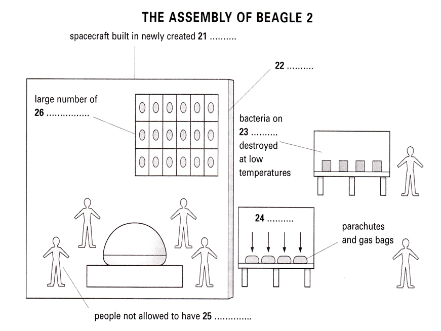

<!-- 원본: ACADEMIC1/reading (레거시 서버에서 2026-11-14 수집, 정답 제거) -->
<div class="legacy-content"><div id="pageContainer">
<div class="page" id="page-0">
<div class="flex flex-col md:flex-row gap-6">
<div class="w-full md:w-1/2 max-h-[600px] overflow-y-auto">
<h3 class="text-xl font-semibold text-purple-800 mb-4">You should spend about 20 minutes
                                    on <b>Questions 1 - 13,</b> which are based on
                                    Reading
                                    Passage 1 below.
                                </h3>
<p class="text-gray-700 leading-relaxed">
</p><div style="width:800px; border:1px solid #bbb; padding:20px;">
<center><b>Emigration to the US</b></center>
<br/>
<p>American history has been largely the story of migrations. That of the hundred
                                        years
                                        or so between the Battle of Waterloo and the outbreak of the First World War
                                        must
                                        certainly be reckoned the largest peaceful migration in recorded history;
                                        probably
                                        the largest of any kind, ever. It is reckoned that some thirty-five million
                                        persons
                                        entered the United States during that period, not to mention the large numbers
                                        who
                                        were also moving to Argentina and Australia. Historians may come to discern that
                                        in
                                        the twentieth and later centuries this movement was dwarfed when Africa, Asia
                                        and
                                        South America began to send out their peoples; but if so, they will be observing
                                        a
                                        pattern, of a whole continent in motion, that was first laid down in
                                        nineteenth-century Europe. Only the French seemed to be substantially immune to
                                        the
                                        virus. Otherwise, all caught it, and all travelled. English, Irish, Welsh,
                                        Scots,
                                        Germans, Scandinavians, Spaniards, Italians, Poles, Greeks, Jews, Portuguese,
                                        Dutch,
                                        Hungarians, Czechs, Croats, Slovenes, Serbs, Slovaks, Ukrainians, Lithuanians,
                                        Russians, Basques. There were general and particular causes.</p>
<div style="height:10px"></div>
<p>As regards the general causes, the rise in population meant that more and more
                                        people
                                        were trying to earn their living on the same amount of land; inevitably, some
                                        were
                                        squeezed off it. The increasing cost of the hard times, and the navies, with
                                        their
                                        need for up-to-date equipment, that every great European power maintained,
                                        implied
                                        heavier and heavier taxes which many found difficult or impossible to pay, and
                                        mass
                                        conscription, which quite as many naturally wanted to avoid. The opening up of
                                        new,
                                        superly productive lands in the United States, Canada, Australia and New
                                        Zealand,
                                        coupled with the availability of steamers and steam trains to distribute their
                                        produce, meant that European peasants could not compete effectively in the world
                                        market; they could always be undersold, especially as the arrival of free trade
                                        was
                                        casting down the old mercantilist barriers everywhere. Steam was important in
                                        other
                                        ways too. It became a comparatively easy matter to cross land and sea, and to
                                        get
                                        news from distant parts. The invention of the electric telegraph also sped up
                                        the
                                        diffusion of news, especially after a cable was successfully laid across the
                                        Atlantic in 1866. New printing and papermaking machines, and a rapidly spreading
                                        literacy made large-circulation newspapers possible for the first time. In
                                        short,
                                        horizons widened, even for the stay-at-home. Most important of all, the
                                        dislocations
                                        in society brought about by the French Revolution, the Industrial Revolution and
                                        the
                                        various wars and tumults of nineteenth-century Europe shattered the old ways.
                                        New
                                        states came into being, old ones disappeared, frontiers were recast, the laws of
                                        land-tenure were radically altered, internal customs barriers and feudal dues
                                        both
                                        disappeared, payment in money replaced payment in kind, new industries
                                        stimulated
                                        new wants and destroyed the self-sufficiency of peasant households and the
                                        saleability of peasant products. The basic structure of rural Europe was
                                        transformed. Bad times pushed, good times pulled (American factories were
                                        usually
                                        clamouring for workers): small wonder that the peoples moved.</p>
<div style="height:10px"></div>
<p>Particular reasons were just as important as these general ones. For example:
                                        between
                                        1845 and 1848 Ireland suffered the terrible potato famine. A million people died
                                        of
                                        starvation or disease, a million more emigrated (1846-51). Matters were not much
                                        better when the Great Famine was over: it was followed by lesser ones, and the
                                        basic
                                        weaknesses of the Irish economy made the outlook hopeless anyway. Mass
                                        emigration
                                        was a natural resort, at first to America, then, in the twentieth century,
                                        increasingly, to England and Scotland. Emigration was encouraged, in the Irish
                                        case
                                        as in many others, by letters sent home and by remittances of money. The first
                                        adventurers thus helped to pay the expenses of their successors. Political
                                        reasons
                                        could sometimes drive Europeans across the Atlantic too. In 1848 some thousands
                                        of
                                        Germans fled the failure of the liberal revolution of that year (but many
                                        thousands
                                        emigrated for purely economic reasons).</p>
<div style="height:10px"></div>
<p>If such external stimuli faltered, American enterprise was more than willing to
                                        fill
                                        the gap. The high cost of labour had been a constant in American history since
                                        the
                                        first settlements; now, as the Industrial Revolution made itself felt, the need
                                        for
                                        workers was greater than ever. The supply of Americans was too small to meet the
                                        demand: while times were good on the family farm, as they were on the whole
                                        until
                                        the 1880s, or while there was new land to be taken up in the West, the drift out
                                        of
                                        agriculture (which was becoming a permanent feature of America, as of all
                                        industrialized society) would not be large enough to fill the factories. So
                                        employers looked for the hands they needed in Europe, whether skilled, like
                                        Cornish
                                        miners, or unskilled, like Irish navies. Then, the transcontinental railroads
                                        badly
                                        needed settlers on their Western land grants, as well as labourers: they could
                                        not
                                        make regular profits until the lands their tracks crossed were regularly
                                        producing
                                        crops that needed carrying to market. Soon every port in Europe knew the
                                        activities
                                        of American shipping lines and their agents, competing with each other to offer
                                        advantageous terms to possible emigrants. They stuck up posters, they advertised
                                        in
                                        the press, they patiently answered inquiries, and they shepherded their clients
                                        from
                                        their native villages, by train, to the dockside, and then made sure they were
                                        safely stowed in the steerage.</p>
<div style="height:10px"></div>
</div>
</div>
<div class="w-full md:w-1/2 max-h-[600px] overflow-y-auto">
<div class="question mb-6">
<div>
<h2 style="font-size:24px;"><b>SECTION 1 QUESTIONS 1-13</b></h2>
<h2 style="font-size:20px;"><b>Questions 1</b></h2>
</div>
<br/>
<div>
<p>Choose the correct letter, <b>A, B, C or D.</b> Write it in box 1 on your
                                            answer
                                            sheet.</p>
<div style="height:10px;"></div>
<p id="question-1"><strong>1</strong> Which of the following does the writer
                                            state in the first
                                            paragraph?</p>
<div style="height:10px;"></div>
<div class="radio-group" id="page1">
<label>     <input autocomplete="off" name="q1" type="radio" value="A"/>
                                                A The extent of emigration in the nineteenth century is
                                                unlikely to be repeated.</label><br/>
<div style="height:10px;"></div>
<label>     <input autocomplete="off" name="q1" type="radio" value="B"/>
                                                B Doubts may be cast on how much emigration there really was in
                                                the nineteenth century.</label><br/>
<div style="height:10px;"></div>
<label>     <input autocomplete="off" name="q1" type="radio" value="C"/>
                                                C It is possible that emigration from Europe may be exceeded by
                                                emigration from outside Europe.</label><br/>
<div style="height:10px;"></div>
<label>     <input autocomplete="off" name="q1" type="radio" value="D"/>
                                                D Emigration can prove to be a better experience for some
                                                nationalities than for others.</label>
</div>
</div>
</div>
<div class="question mb-6">
<div>
<h2 style="font-size:20px;"><b>Questions 2-9</b></h2>
<div style="height:10px;"></div>
<p>Complete the sentences below with words taken from Reading Passage 1.</p>
<div style="height:10px;"></div>
<p>Use <b>NO MORE THAN THREE WORDS</b> for each answer.</p>
<div style="height:10px;"></div>
<p>Write your answers in boxes 2–9 on your answer sheet.</p>
<div style="height:10px;"></div>
<h3><b>GENERAL CAUSES OF EMIGRATION TO THE US</b></h3>
</div>
<br/>
<div>
<ul style="display:flex; flex-direction: column; justify-content: left; align-items:flex-start;">
<li>Population increases made it impossible for some to live from
                                                agriculture.
                                            </li>
<div style="height:10px;"></div>
<li>⦁ In Europe, countries kept <strong id="question-2">2</strong> <input autocomplete="off" name="q2" placeholder="(2)" type="text"/> that
                                                were both big, and
                                                this resulted in
                                                increases in<br/><strong id="question-3">3</strong> <input autocomplete="off" name="q3" placeholder="(3)" type="text"/>and in ,
                                                <strong id="question-4">4</strong> <input autocomplete="off" name="q4" placeholder="(4)" type="text"/>which a lot of
                                                people wanted to
                                                escape.
                                            </li>
<div style="height:10px;"></div>
<li>⦁ It became impossible for <strong id="question-5">5</strong> <input autocomplete="off" name="q5" placeholder="(5)" type="text"/> in
                                                Europe to earn a
                                                living because of
                                                developments<br/>in other countries and the introduction of
                                                <strong id="question-6">6</strong>
<input autocomplete="off" name="q6" placeholder="(6)" type="text"/>.
                                            </li>
<div style="height:10px;"></div>
<li>⦁ People knew more about the world beyond their own countries because
                                                there
                                                was greater <strong id="question-7">7</strong> <input autocomplete="off" name="q7" placeholder="(7)" type="text"/>.</li>
<div style="height:10px;"></div>
<li>⦁ <strong id="question-8">8</strong> <input autocomplete="off" name="q8" placeholder="(8)" type="text"/> had been formed
                                                because of
                                                major
                                                historical events.
                                            </li>
<div style="height:10px;"></div>
<li>⦁ The creation of <strong id="question-9">9</strong> <input autocomplete="off" name="q9" placeholder="(9)" type="text"/> caused
                                                changes in
                                                demand.</li>
</ul>
</div>
</div>
<div class="question mb-6">
<div>
<h2 style="font-size:20px;"><b>Questions 10-13</b></h2>
<p>Complete each sentence with the correct ending A–H from the box below.</p>
</div>
<br/>
<div>
<p>Write the correct letter A–H in boxes 10–13 on your answer sheet.</p>
<div style="height:10px;"></div>
<p><strong id="question-10">10</strong> The end of the potato famine in Ireland
                                            <input autocomplete="off" name="q10" placeholder="(10)" type="text"/>
</p>
<div style="height:10px;"></div>
<p><strong id="question-11">11</strong> People who had emigrated from Ireland
                                            <input autocomplete="off" name="q11" placeholder="(11)" type="text"/>
</p>
<div style="height:10px;"></div>
<p><strong id="question-12">12</strong> Movement off the land in the US <input autocomplete="off" name="q12" placeholder="(12)" type="text"/></p>
<div style="height:10px;"></div>
<p><strong id="question-13">13</strong> The arrival of railroad companies in the
                                            West of the US
                                            <input autocomplete="off" name="q13" placeholder="(13)" type="text"/>
</p>
<div style="height:10px;"></div>
<br/>
<div class="radio-group" style="width:600px; border:1px solid #000; padding:10px;">
<p>  <b>A</b>  made people reluctant to move elsewhere.</p>
<div style="height:10px;"></div>
<p>  <b>B</b>  resulted in a need for more agricultural
                                                workers.
                                            </p>
<div style="height:10px;"></div>
<p>  <b>C</b>  provided evidence of the advantages of
                                                emigration.
                                            </p>
<div style="height:10px;"></div>
<p>  <b>D</b>  created a false impression of the advantages
                                                of
                                                moving elsewhere.</p>
<div style="height:10px;"></div>
<p>  <b>E</b>  did little to improve the position of much of
                                                the
                                                population.</p>
<div style="height:10px;"></div>
<p>  <b>F</b>  took a long time to have any real effect.</p>
<div style="height:10px;"></div>
<p>  <b>G</b>  failed to satisfy employment requirements.</p>
<div style="height:10px;"></div>
<p>  <b>H</b>  created a surplus of people who had emigrated.
                                            </p>
</div>
</div>
</div>
</div>
</div>
</div>
<div class="page" id="page-1">
<div class="flex flex-col md:flex-row gap-6">
<div class="w-full md:w-1/2 max-h-[600px] overflow-y-auto">
<h3 class="text-xl font-semibold text-purple-800 mb-4">You should spend
                                    about 20 minutes on Questions <b>14-26</b> which are based on this passage 2.</h3>
<p class="text-gray-700 leading-relaxed">
</p><div style="width:800px; border:1px solid #bbb; padding:20px;">
<div>
<center><b>How bugs hitch-hike across the galaxy</b></center><br/>
<div style="background-color: #000; color:#fff;">
                                            Mankind’s search for alien life could be jeopardised by ultra-resilient
                                            bacteria
                                            from Earth, David Derbyshire reports
                                        </div>
<div style="height:10px"></div>
<p>
                                            What was the most important discovery of the Apollo programme? Some have
                                            argued that
                                            it
                                            was the rocks that explained how the Moon was formed. Others believe it was
                                            the
                                            technological spin-offs. But according to Captain Peter Conrad, who led the
                                            1969
                                            Apollo
                                            12 mission, it was life.
                                        </p>
<div style="height:10px"></div>
<p>
                                            On the apparently dead lunar surface, a colony of bacteria was thriving. The
                                            organisms were not native to the Moon, but were visitors from Earth who had
                                            hitch-hiked a ride on board one of Nasa’s five Surveyor probes from the
                                            1960s.
                                            To the astonishment of biologists, between 50 and 100 Streptococcus bacteria
                                            survived
                                            the journey across space, at an average temperature 20 degrees above
                                            absolute zero
                                            with
                                            no source of energy or water, and stayed alive on the Moon in a camera for
                                            three
                                            years.
                                            Captain Conrad, who returned the bacteria to Earth, was later to confess: ‘I
                                            always
                                            thought the most significant thing we ever found on the whole Moon was the
                                            little
                                            bacteria that came back and lived.'</p>
<div style="height:10px"></div>
<p>
                                            The ability of life to survive, adapt and evolve never fails to astonish.
                                            Over the
                                            past three decades, bacteria and archaea have been found in some of the most
                                            inhospitable
                                            places on Earth. Known as extremophiles, these organisms have coped with
                                            life in a
                                            vacuum, pressure as high as 70 tons per square inch, depths of four miles
                                            beneath
                                            the surface and scorching waters around deep-sea volcanic vents. They have
                                            also
                                            survived
                                            25 million years inside a bee preserved in resin. Their resilience has
                                            renewed
                                            enthusiasm for the search for alien life – a quest that many had assumed had
                                            been
                                            banished to science fiction. Mars and the moons Titan, Europa and Callisto
                                            are once
                                            again plausible candidates for extraterrestrials.</p>
<div style="height:10px"></div>
<p>
                                            As interest in alien life has grown, so have concerns that mankind could
                                            spread its
                                            own
                                            microscopic bugs, contaminating the places we want to explore. In 2003, Nasa
                                            ended
                                            the
                                            Galileo probe’s mission by smashing it into Jupiter. The fear was that it
                                            could be
                                            carrying bacteria that might contaminate Europa’s oceans.</p>
<div style="height:10px"></div>
<p>
                                            The team behind Beagle 2 – the British probe that went to search for life on
                                            Mars in
                                            2003 – was forced to take contamination particularly seriously. If Beagle
                                            carried to
                                            Mars life or dead spores picked up during the manufacture of the spacecraft,
                                            its
                                            science
                                            would be jeopardised. Prof Colin Pillinger, the Open University scientist
                                            who headed
                                            the
                                            Beagle project, said: ‘What we’ve learnt since the Apollo missions and the
                                            Viking
                                            Mars
                                            missions of the 1970s is that bugs are far more tenacious than we ever
                                            imagined.
                                            They
                                            seem to be very tolerant of high temperatures, they lie dormant at low
                                            temperatures
                                            for
                                            long periods, they are immune to salt, acid and alkali, they seem to survive
                                            on
                                            substrate that are not what people expect. Extremophiles are extremely
                                            adapted to
                                            hanging on to life.'</p>
<div style="height:10px"></div>
<p>
                                            Beagle had to be assembled in a ‘clean room’ – and one was specially put
                                            together in
                                            a converted BBC outside broadcast van garage in Milton Keynes. It had enough
                                            room to
                                            include an enormous set of fans that circulated and filtered the air 500
                                            times an
                                            hour. Only a handful of trained researchers were allowed inside. ‘I wasn’t
                                            allowed
                                            in,’
                                            says Prof Pillinger.</p>
<div style="height:10px"></div>
<p>
                                            There was special training for people going in there and special conditions.
                                            There
                                            was a
                                            ban on beards and a limit of four people at any one time. The team kept
                                            samples of
                                            everything that could have contaminated the craft and monitored every stage
                                            of
                                            assembly.</p>
<div style="height:10px"></div>
<p>
                                            To reduce the workload, the idea was to build as much as possible before
                                            sterilising
                                            it and banishing it to the difficult working conditions inside the clean
                                            room. The
                                            easy
                                            stuff was heated to 115C for 52 hours, more than enough to kill off bugs.
                                            Electronic
                                            equipment can’t cope with those sorts of temperatures, so the team used a
                                            hydrogen
                                            peroxide plasma, created in a microwave, to kill off bugs at low
                                            temperatures.
                                            Parachutes and gas bags were zapped with gamma radiation. It wasn’t just
                                            facial hair
                                            that was banned: ‘You’ve heard of the paperless office,’ says Prof
                                            Pillinger. ‘We
                                            had the paperless assembling line. The guys normally go in armed with loads
                                            of
                                            paper,
                                            drawings, programmes, but we didn’t allow any of that. They were getting
                                            information
                                            through a glass wall, over mikes and monitors. And sometimes on a piece of
                                            paper
                                            stuck to the glass with sticky tape.</p>
<div style="height:10px"></div>
<p>
                                            Beagle’s heat shield doubled as its biological shield. So once the
                                            instruments were
                                            encased and sealed, the craft could be brought back into the real world. The
                                            shield
                                            heated up to 1,700 degrees on its descent through the Martian atmosphere, so
                                            bugs on
                                            the casing were not a worry. Mars Express – the craft carrying Beagle – did
                                            not need
                                            sterilising. Its trajectory was designed so that if something went wrong,
                                            the craft
                                            would not simply crash into the planet. Its course could be corrected en
                                            route.</p>
<div style="height:10px"></div>
<p>
                                            Eventually, space scientists hope to return samples of Mars to Earth. While
                                            the
                                            risks ofalien bacteria proving hazardous on Earth may be remote, the rocks
                                            will
                                            still need to be quarantined. Moon rocks from Apollo were analysed in vacuum
                                            glove
                                            boxes for the first two missions. Later, researchers stored rocks in
                                            nitrogen. Prof
                                            Pillinger believed the first Mars rocks should be sterilised before they are
                                            studied
                                            on Earth. For security purposes it would be the most sensible thing to do.
                                            ‘You
                                            don’t have to sterilise it all, you can contain some of it and then
                                            sterilise the
                                            sample you want to look at, but it would lower the risk and make it easier
                                            to
                                            analyse.’
                                        </p>
</div>
</div>
</div>
<div class="w-full md:w-1/2 max-h-[600px] overflow-y-auto">
<div class="question mb-6">
<div>
<h2 style="font-size:24px;"><b>SECTION 2 QUESTIONS 14-26</b></h2><br/>
<h2 style="font-size:20px;"><b>Questions 14-20</b></h2>
</div>
<br/>
<div>
<p>Look at the statements (Questions 14-20) and the list of spacecraft below</p>
<div style="height:10px;"></div>
<p>Match each statement with the spacecraft it applies to.</p>
<div style="height:10px;"></div>
<p>Write the correct letter A-E in boxes 14-20 on your answer sheet.</p>
<br/>
<b id="question-14">14 </b>Provided transport from Earth for bacteria <input autocomplete="off" name="q14" placeholder="(14)" type="text"/>
<div style="height:10px"></div>
<b id="question-15">15 </b>Led to realization of how tenacious bacteria are
                                        <input autocomplete="off" name="q15" placeholder="(15)" type="text"/>
<div style="height:10px"></div>
<b id="question-16">16 </b>was created so that there could be no bacteria on the
                                        outer structure
                                        <input autocomplete="off" name="q16" placeholder="(16)" type="text"/>
<div style="height:10px"></div>
<b id="question-17">17 </b>was capable of changing direction in the event of a
                                        problem <input autocomplete="off" name="q17" placeholder="(17)" type="text"/>
<div style="height:10px"></div>
<b id="question-18">18 </b>brought material which was kept in more than one kind
                                        of container
                                        <input autocomplete="off" name="q18" placeholder="(18)" type="text"/>
<div style="height:10px"></div>
<b id="question-19">19 </b>required action because of the possibility of the
                                        introduction of
                                        harmful bacteria
                                        <input autocomplete="off" name="q19" placeholder="(19)" type="text"/>
<div style="height:10px"></div>
<b id="question-20">20 </b>resulted in disagreement as to the relative value of
                                        what was found
                                        <input autocomplete="off" name="q20" placeholder="(20)" type="text"/>
<div style="height:10px"></div>
<div>
<div style="width:400px; border:1px solid #000; padding:20px;">
<center><b>List of Spacecraft</b></center>
<br/>
<center><b>A </b>  Apollo craft</center><br/>
<div style="height:10px"></div>
<center><b>B </b>  Surveyor probe</center><br/>
<div style="height:10px"></div>
<center><b>C </b>  Galileo probe</center><br/>
<div style="height:10px"></div>
<center><b>D </b>  Beagle 2</center><br/>
<div style="height:10px"></div>
<center><b>E </b>  Mars Express</center><br/>
</div>
</div>
</div>
</div>
<div class="question mb-6">
<div>
<h2 style="font-size:20px;"><b>Questions 21-26</b></h2>
<p>Label the diagram below.</p>
<div style="height:10px;"></div>
<p>Choose <b>NO MORE THAN THREE WORDS</b> from the reading passage for each
                                            answer.</p>
</div>
<br/>
<div>
<p>Write the answers in boxes 21-26 on your answer sheet.</p>
<div style="height:5px;"></div>
<!-- 빈칸을 그림 속 번호 자리에 겹쳐 놓음 (left/top = 그림 871×654 기준 %, top 은 빈칸 줄의 세로 가운데) -->
<div class="diagram-wrap">

<input autocomplete="off" name="q21" placeholder="(21)" type="text" style="left:44.4%;top:11.5%"/>
<input autocomplete="off" name="q22" placeholder="(22)" type="text" style="left:62.1%;top:19.9%"/>
<input autocomplete="off" name="q23" placeholder="(23)" type="text" style="left:54.1%;top:40.2%"/>
<input autocomplete="off" name="q24" placeholder="(24)" type="text" style="left:57.5%;top:66.2%"/>
<input autocomplete="off" name="q25" placeholder="(25)" type="text" style="left:45.7%;top:96%"/>
<input autocomplete="off" name="q26" placeholder="(26)" type="text" style="left:7.6%;top:34.4%"/>
</div>
</div>
</div>
</div>
</div>
</div>
<div class="page" id="page-2">
<div class="flex flex-col md:flex-row gap-6">
<div class="w-full md:w-1/2 max-h-[600px] overflow-y-auto">
<h3 class="text-xl font-semibold text-purple-800 mb-4">You should spend
                                    about
                                    20 minutes on <b>Questions 27-40</b> which are based on this passage 3.
                                </h3>
<p class="text-gray-700 leading-relaxed">
</p><div style="width:800px; border:1px solid #bbb; padding:20px;">
<div>
<center><b>Finding out about the world from the television news</b></center>
<br/>
<p>
                                            In The Ideological Octopus (1991), Justin Lewis points to an important issue
                                            concerning the formal structure of television news. As he notes, television
                                            news lacks the narrative element which, in other genres, serves to capture
                                            viewer interest and thus motivate viewing. Lewis posits this as one of the
                                            key reasons why television news often fails to interest people and why, when
                                            they do watch it, people often cannot understand it. Lewis argues that one
                                            fundamental problem with watching
                                            television news is that its narrative structure means that the viewer is
                                            offered the
                                            punchline before the joke – because the main point (the headline) comes
                                            right at the
                                            beginning, after which the programme, by definition, deals with less and
                                            less
                                            important things. Thus, in television news our interest is not awakened by
                                            an enigma
                                            which is then gradually solved, to provide a gratifying solution – as so
                                            often
                                            happens in fictional narratives. In Lewis’s terms, in television news there
                                            is no
                                            enigma, the solution of which will motivate the viewing process. As he
                                            baldly
                                            states, ‘If we decided to try to design a television programme with a
                                            structure that
                                            would completely fail to capture an audience’s interest, we might (finally)
                                            come up
                                            with the format of the average television news show’ (Lewis 1991).</p>
<div style="height:10px"></div>
<br/>
<p>What Lewis also does is offer an interesting contrast, in this respect,
                                            between the
                                            high-status phenomenon of television news and the low-status genre of soap
                                            opera.
                                            The latter, he observes, offers the most highly developed use of effective
                                            narrative
                                            codes. To that extent soap opera, with its multiple narratives, could be
                                            seen, in
                                            formal terms, as the most effective type of television for the cultivation
                                            of viewer
                                            interest, and certainly as a far more effective form than that of television
                                            news
                                            for this purpose. Clearly, some of Lewis’s speculation here is problematic.
                                            There
                                            are counterexamples of his arguments (e.g. instances of programmes such as
                                            sports
                                            news which share the problematic formal features he points to but which are
                                            nonetheless popular – at least among certain types of viewers). Moreover, he
                                            may
                                            perhaps overstress the importance of structure as against content relevance
                                            in
                                            providing the basis for programme appeal. Nonetheless, I would suggest that
                                            his
                                            argument, in this respect, is of considerable interest.</p>
<div style="height:10px"></div>
<br/>
<p>Lewis argues not only that soap opera is more narratively interesting than
                                            television
                                            news, in formal terms, but, moreover, that the world of television fiction
                                            in
                                            general is much closer to most people’s lives than that presented in the
                                            news. This,
                                            he claims, is because the world of television fiction often feels to people
                                            like
                                            their own lives. They can, for example, readily identify with the moral
                                            issues and
                                            personal dilemmas faced by the characters in a favourite soap opera.
                                            Conversely, the
                                            world of television news is much more remote in all senses; it is a socially
                                            distant
                                            world populated by another race of special or ‘elite’ persons, the world of
                                            ‘them’
                                            not ‘us’. This is also why ‘most people feel more able to evaluate TV
                                            fiction than
                                            TV news ... because it seems closer to their own lives and to the world they
                                            live in
                                            ... [whereas] the world of television news ... might almost be beamed in
                                            from
                                            another planet’ (Lewis 1991). It is as if the distant world of ‘the news’ is
                                            so
                                            disconnected from popular experience that it is beyond critical judgment for
                                            many
                                            viewers. Hence, however alienated they feel from it, they nonetheless lack
                                            any
                                            alternative perspectives on the events it portrays.</p>
<div style="height:10px"></div>
<br/>
<p>One consequence of this, Lewis argues, is that precisely, because of this
                                            distance,
                                            people who feel this kind of alienation from the ‘world of news’ nonetheless
                                            use
                                            frameworks to understand news items which come from within the news
                                            themselves.
                                            This, he argues, is because in the absence of any other source of
                                            information or
                                            perspective they are forced back on using the media’s own framework. Many
                                            viewers
                                            are simply unable to place the media’s portrayal of events in any other
                                            critical
                                            framework (where would they get it from?). To this extent, Lewis argues,
                                            Gerberner
                                            and his colleagues (see Gerberner et al. 1986; Signorielli and Morgan 1990)
                                            may
                                            perhaps be right in thinking that the dominant perspectives and ‘associative
                                            logics’
                                            offered by the media may often simply be soaked up by audiences by sheer
                                            dint of
                                            their repetition. This is not to suggest that such viewers necessarily
                                            believe, or
                                            explicitly accept, these perspectives, but simply to note that they have no
                                            other
                                            place to start from, however cynical they may be, at a general level, about
                                            ‘not
                                            believing what you see on television’, and they may thus tend, in the end,
                                            to fall
                                            back on ‘what it said on TV’.</p>
<div style="height:10px"></div>
<br/>
<p> In one sense, this could be said to be the converse of Hall’s ‘negotiated
                                            code’
                                            (1980), as taken over from Parkin (1973). Parkin had argued that many
                                            working-class
                                            people display a ‘split consciousness’, whereby they accept propositions
                                            from the
                                            ‘dominant ideology’ at an abstract level, but then ‘negotiate’ or ‘discount’
                                            the
                                            application of these ideological propositions to the particular
                                            circumstances of
                                            their own situation. Here, by contrast, we confront a situation where people
                                            often
                                            express cynicism in general (so that ‘not believing what you see in the
                                            media’ is no
                                            more than common sense), but then in any particular case they often find
                                            themselves
                                            pushed back into reliance on the mainstream media’s account of anything
                                            beyond the
                                            realm of their direct personal experience, simply for lack of any
                                            alternative
                                            perspective.</p>
</div>
</div>
</div>
<div class="w-full md:w-1/2 max-h-[600px] overflow-y-auto">
<div class="question mb-6">
<div>
<h2 style="font-size:24px;"><b>SECTION 3 QUESTIONS 27-40</b></h2>
<h2 style="font-size:20px;"><b>Questions 27-34</b></h2>
<p>Complete the summary below using words from the box.</p><br/>
</div>
<div>
<p>Write your answers in boxes, <b>27 - 34</b>on your answer sheet.</p><br/>
<div style="margin-bottom: 20px; width: 800px;">
<div stlye="width:760px;  text-align:center;">
<center>
<h3 style="color:#fff; background:#000; padding:10px 0;">The
                                                        structure of
                                                        television news</h3>
</center>
</div>
<div style="height:10px;"></div>
<p style="line-height:24px;">Justin Lewis says that television
                                                news does not have the
                                                <b id="question-27">27</b> <input autocomplete="off" name="q27" placeholder="(27)" type="text"/> feature
                                                that other types of
                                                programme have. As a result, many viewers do not find it interesting and
                                                may find it
                                                <b id="question-28">28</b> <input autocomplete="off" name="q28" placeholder="(28)" type="text"/>. This is
                                                because the <b id="question-29">29</b> <input autocomplete="off" name="q29" placeholder="(29)" type="text"/>
                                                information comes first and after that <b id="question-30">30</b> <input autocomplete="off" name="q30" placeholder="(30)" type="text"/>
                                                matters are covered. In
                                                television news, there
                                                is no <b id="question-31">31</b> <input autocomplete="off" name="q31" placeholder="(31)" type="text"/>
                                                progress towards a conclusion and nothing <b id="question-32">32</b>
<input autocomplete="off" name="q32" placeholder="(32)" type="text"/> to
                                                find out about. In fact,
                                                he believes that
                                                television news is an example of how the <b id="question-33">33</b>
<input autocomplete="off" name="q33" placeholder="(33)" type="text"/>
                                                process in the field of
                                                television could result
                                                in something that is <b id="question-34">34</b> <input autocomplete="off" name="q34" placeholder="(34)" type="text"/> to
                                                what
                                                constitutes an interesting
                                                programme.
                                            </p>
<div style="height:10px;"></div>
<div style="display:flex; justify-content: space-around; width:700px; border:1px solid #aaa;padding:20px;">
<div>
                                                    upsetting<br/>
<div style="height:10px;"></div>
                                                    contrary<br/>
<div style="height:10px;"></div>
                                                    crucial<br/>
<div style="height:10px;"></div>
                                                    repetitive
                                                </div>
<div>
                                                    creative<br/>
<div style="height:10px;"></div>
                                                    opinionated<br/>
<div style="height:10px;"></div>
                                                    story-telling<br/>
<div style="height:10px;"></div>
                                                    informative
                                                </div>
<div>
                                                    secondary<br/>
<div style="height:10px;"></div>
                                                    routine<br/>
<div style="height:10px;"></div>
                                                    additional<br/>
<div style="height:10px;"></div>
                                                    related
                                                </div>
<div>
                                                    controversial<br/>
<div style="height:10px;"></div>
                                                    step-by-step<br/>
<div style="height:10px;"></div>
                                                    overwhelming<br/>
<div style="height:10px;"></div>
                                                    confusing
                                                </div>
<div>
                                                    fast-moving<br/>
<div style="height:10px;"></div>
                                                    informal<br/>
<div style="height:10px;"></div>
                                                    mysterious<br/>
<div style="height:10px;"></div>
                                                    diverse
                                                </div>
</div>
</div>
</div>
</div>
<div class="question mb-6">
<div>
<h2 style="font-size:20px;"><b>Questions 35-40</b></h2>
<p>Complete the flow chart below.</p><br/>
</div>
<br/>
<p>Do the following statements agree with the information given in Reading Passage
                                        3?</p>
<br/>
<p>In boxes 35–40 on your answer sheet write</p><br/>
<div>
<p>   <b>TRUE</b>      if the statement
                                            agrees
                                            with the information</p>
<p>   <b>FALSE</b>      if the statement
                                            contradicts the information</p>
<p>   <b>NOT GIVEN</b>      if there is
                                            no
                                            information on this</p>
</div>
<br/>
<div style="width:700px; padding:10px;">
<p><b id="question-35">35</b> Lewis concentrates more on the structure of
                                            programmes than on what is actually in them.<br/>
</p><div class="space-y-2 ml-6">
<label><input autocomplete="off" class="mr-2 w-4 h-4 accent-purple-600" name="q35" type="radio" value="TRUE"/><b>TRUE</b></label>   
                                            <label><input autocomplete="off" class="mr-2 w-4 h-4 accent-purple-600" name="q35" type="radio" value="FALSE"/><b>FALSE</b></label>   
                                            <label><input autocomplete="off" class="mr-2 w-4 h-4 accent-purple-600" name="q35" type="radio" value="NOT GIVEN"/><b>NOT GIVEN</b></label>
</div>
<div style="height:10px;"></div>
<p><b id="question-36">36</b> Lewis regrets viewers’ preference for soap operas
                                            over television news.<br/>
</p><div class="space-y-2 ml-6">
<label><input autocomplete="off" class="mr-2 w-4 h-4 accent-purple-600" name="q36" type="radio" value="TRUE"/><b>TRUE</b></label>   
                                            <label><input autocomplete="off" class="mr-2 w-4 h-4 accent-purple-600" name="q36" type="radio" value="FALSE"/><b>FALSE</b></label>   
                                            <label><input autocomplete="off" class="mr-2 w-4 h-4 accent-purple-600" name="q36" type="radio" value="NOT GIVEN"/><b>NOT GIVEN</b></label>
</div>
<div style="height:10px;"></div>
<p><b id="question-37">37</b> Lewis suggests that viewers sometimes find that
                                            television news contradicts
                                            their knowledge of the world.<br/>
</p><div class="space-y-2 ml-6">
<label><input autocomplete="off" class="mr-2 w-4 h-4 accent-purple-600" name="q37" type="radio" value="TRUE"/><b>TRUE</b></label>   
                                            <label><input autocomplete="off" class="mr-2 w-4 h-4 accent-purple-600" name="q37" type="radio" value="FALSE"/><b>FALSE</b></label>   
                                            <label><input autocomplete="off" class="mr-2 w-4 h-4 accent-purple-600" name="q37" type="radio" value="NOT GIVEN"/><b>NOT GIVEN</b></label>
</div>
<div style="height:10px;"></div>
<p><b id="question-38">38</b> Lewis believes that viewers have an inconsistent
                                            attitude towards the reliability of television news.<br/>
</p><div class="space-y-2 ml-6">
<label><input autocomplete="off" class="mr-2 w-4 h-4 accent-purple-600" name="q38" type="radio" value="TRUE"/><b>TRUE</b></label>   
                                            <label><input autocomplete="off" class="mr-2 w-4 h-4 accent-purple-600" name="q38" type="radio" value="FALSE"/><b>FALSE</b></label>   
                                            <label><input autocomplete="off" class="mr-2 w-4 h-4 accent-purple-600" name="q38" type="radio" value="NOT GIVEN"/><b>NOT GIVEN</b></label>
</div>
<div style="height:10px;"></div>
<p><b id="question-39">39</b> Parkin states that many working class people see
                                            themselves as exceptions to general beliefs.<br/>
</p><div class="space-y-2 ml-6">
<label><input autocomplete="off" class="mr-2 w-4 h-4 accent-purple-600" name="q39" type="radio" value="TRUE"/><b>TRUE</b></label>   
                                            <label><input autocomplete="off" class="mr-2 w-4 h-4 accent-purple-600" name="q39" type="radio" value="FALSE"/><b>FALSE</b></label>   
                                            <label><input autocomplete="off" class="mr-2 w-4 h-4 accent-purple-600" name="q39" type="radio" value="NOT GIVEN"/><b>NOT GIVEN</b></label>
</div>
<div style="height:10px;"></div>
<p><b id="question-40">40</b> The writer of the text believes that viewers
                                            should have a less passive attitude towards what they are told by the
                                            media.<br/>
</p><div class="space-y-2 ml-6">
<label><input autocomplete="off" class="mr-2 w-4 h-4 accent-purple-600" name="q40" type="radio" value="TRUE"/><b>TRUE</b></label>   
                                            <label><input autocomplete="off" class="mr-2 w-4 h-4 accent-purple-600" name="q40" type="radio" value="FALSE"/><b>FALSE</b></label>   
                                            <label><input autocomplete="off" class="mr-2 w-4 h-4 accent-purple-600" name="q40" type="radio" value="NOT GIVEN"/><b>NOT GIVEN</b></label>
</div>
</div>
</div>
</div>
</div>
</div>
</div>
</div>
